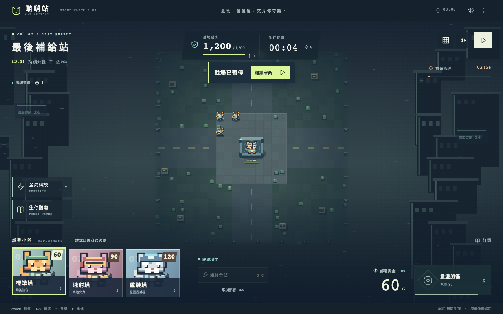

02 /
設計與實作案例
已上線
喵哨站
以貓咪同最後補給站做主題，將部署、資源分配同生存挑戰放入一個瀏覽器塔防遊戲。
打開作品
（於新分頁開啟）
瀏覽器遊戲 · 塔防生存

實際畫面可以用佢做咩？
- 選炮塔、揀空格部署，守住基地四周。
- 點選炮塔升級或換裝，喺戰況變化時調整防線。
- 支援暫停、震盪脈衝，同手機點格後確認部署。
點樣實作？
遊戲喺瀏覽器本機運行。公開部署包含 HTML 入口、JavaScript 同 CSS 資源，透過 GitHub Pages 發布。
最高生存紀錄同音效設定保存在瀏覽器本機，毋須登入。介面提供選塔、部署、升級同換裝嘅操作流程。
- 01 選塔與部署
- 02 本機遊戲運行
- 03 本機紀錄與設定
驗證與限制
開始畫面擷取於 2026-10-25。公開說明記錄咗鍵盤操作同手機確認部署方式。
公開儲存庫主要存放正式部署檔案，未公開嘅原始架構、演算法同開發流程不作推測。
本機紀錄依賴瀏覽器儲存；清除網站資料或轉用其他裝置，紀錄唔會自動同步。
參考公開資料
了解之後，直接試用。
實際功能同內容，以作品網站為準。